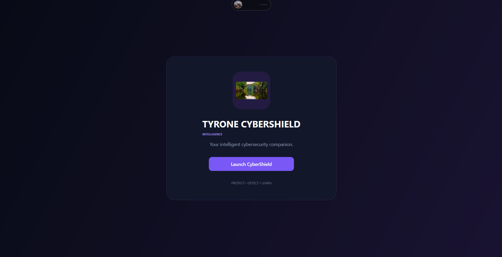
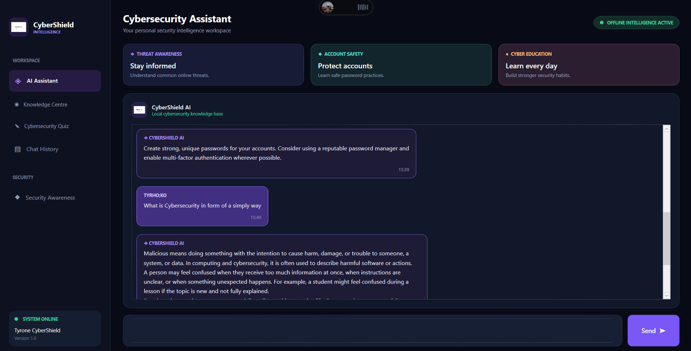
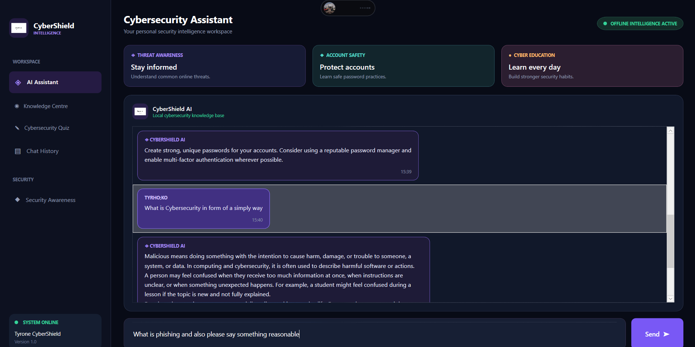

Interactive Dashboard
A central dashboard for navigating the application's learning features.
DESKTOP APPLICATION · ARTIFICIAL INTELLIGENCE
A cybersecurity awareness application designed to help users understand digital threats through interactive learning, progress tracking and an offline chatbot.
01 / OVERVIEW
Tyrone CyberShield is a desktop application developed to promote cybersecurity awareness. It provides an interactive learning environment where users can explore cybersecurity topics, monitor their learning progress and interact with an offline chatbot powered by a built-in knowledge base.
02 / THE CHALLENGE
Cybersecurity can be difficult for beginners to understand. I wanted to create an accessible learning tool that presents important security concepts in a clear, interactive and user-friendly way.
03 / FEATURES
A central dashboard for navigating the application's learning features.
Explore cybersecurity topics through interactive learning screens.
Track completed learning topics and view learning progress.
Find cybersecurity information using search and category filters.
Ask cybersecurity questions using the application's built-in knowledge base.
Keep learning progress available between application sessions.
04 / TECHNOLOGY
05 / DEVELOPMENT
The application was developed using C# and Windows Presentation Foundation (WPF). I worked on the user interface, navigation, cybersecurity knowledge base, chatbot functionality and learning progress features. The project helped me strengthen my desktop application development and problem-solving skills.
06 / SCREENSHOTS
A look at the application's interface and key screens.




07 / CONCLUSION
Developing Tyrone CyberShield gave me practical experience building a desktop application with C# and WPF. It also strengthened my understanding of user interface design, application structure, local data persistence and interactive learning features.
Explore the Source Code ↗